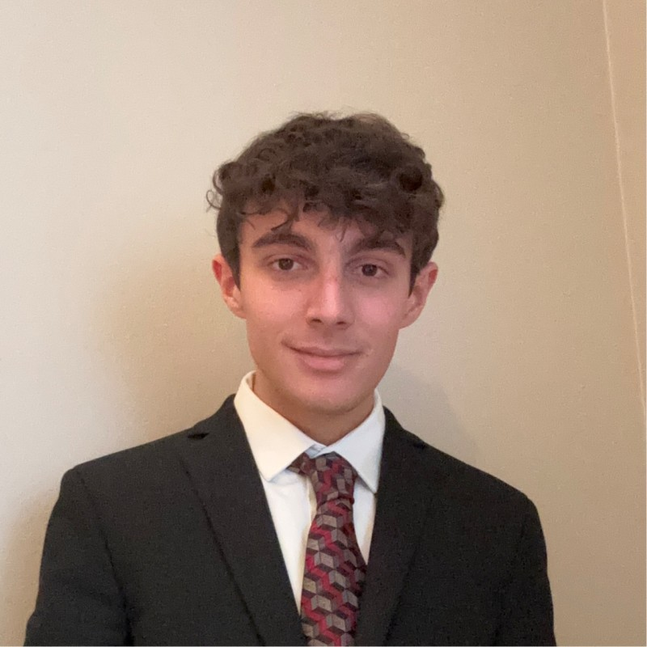

About
Summary
Hi, I'm Augie! I'm an aspiring software engineer based in the New York metropolitan area with a passion for building and refining projects that challenge me to grow. While I haven't yet held a formal role in the industry, I've been sharpening my skills through personal work—enhancing past academic projects and creating websites for clients. These experiences have fueled my drive to turn my passion into a career.
Mission Statement
My goal is to bring lasting value to any team I join by combining persistence, adaptability, and a commitment to excellence. I believe in putting in the effort required—whether convenient or not—to support the team's goals and deliver meaningful results. For me, success comes from contributing reliably, learning continuously, and approaching every challenge with a positive, solution-focused mindset. Never turning down a challenge is the essence of work ethic, and I hope to someday have the chance to demonstrate that in a professional setting.
Interests & Hobbies
I am writing low-level projects like shells and kernels and aspire to one day release my own useful Linux distro or retro console emulator. In the meantime, I'm honing my skills through projects like emulated CPUs, which challenge me to think deeply about both technical design and creative execution. In addition to my tech-based interests, I'm an avid classicist. My love of classical history and language plays a significant role in how I approach problem-solving and artistic expression. I see my interest in classics not as separate from my work in technology, but as an inextricable foundation of my character.